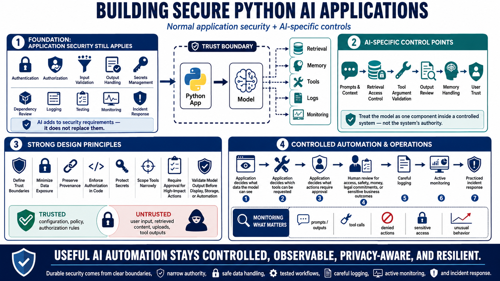

Course Summary and Key Takeaways
Connecting to LMS... Progress: in progress

Narration
Building secure Python AI applications requires normal application security and AI-specific controls. Authentication, authorization, input validation, output handling, secrets management, dependency review, logging, testing, monitoring, and incident response still apply. AI adds new pressure around prompts, context, retrieval, tools, generated output, memory, and user trust. A secure design treats the model as one component inside a controlled system, not as the system's authority.
Strong designs define trust boundaries, minimize data exposure, preserve provenance, enforce authorization in application code, validate tool arguments, protect secrets, review outputs, and monitor behavior. They keep trusted configuration separate from untrusted content. They ensure retrieval respects access control. They scope tools narrowly and require approvals for high-impact actions. They validate model output before display, storage, or automation.
AI models can support workflows, but they should not become unsupervised authorities over data access, permissions, or high-impact actions. The application should decide what data the model can see, which tools it can request, what actions require approval, how outputs are validated, and how errors are handled. Human review remains important when decisions affect access, safety, money, legal commitments, or sensitive business outcomes.
The goal is useful AI automation that remains controlled, observable, privacy-aware, and resilient as the application evolves. Models, prompts, tools, data, and providers will change. Durable security comes from clear boundaries, narrow authority, safe data handling, tested workflows, careful logging, active monitoring, and a practiced incident response path. That is how Python AI applications can be helpful without becoming unpredictable or overtrusted.